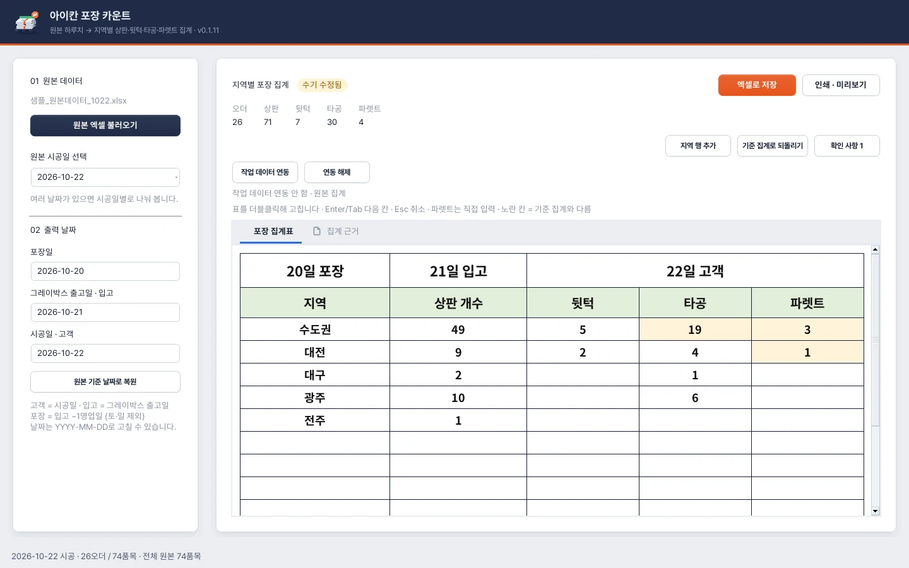
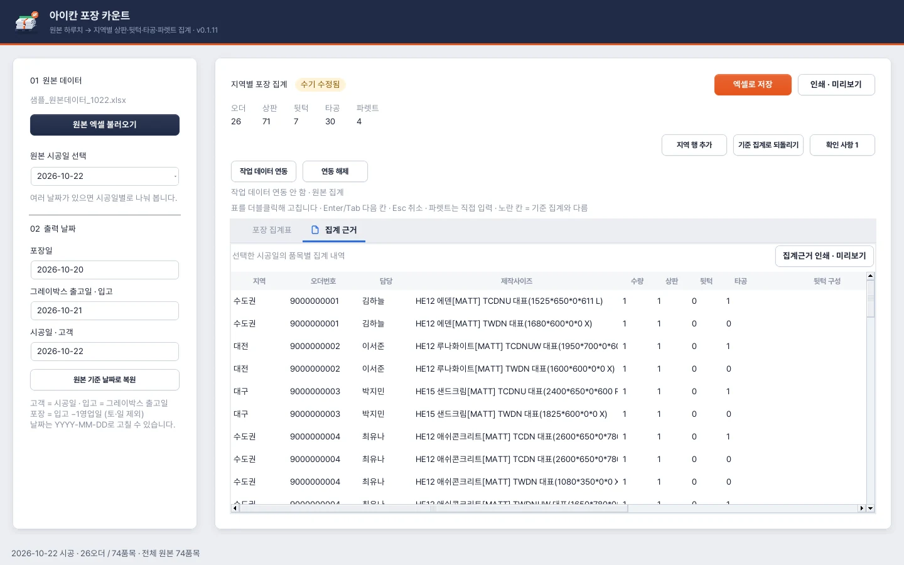

USER MANUAL · 0.1.11
아이칸 포장 카운트
- 기준 버전0.1.11
- 기준일2026-10-27
- 운영체제Windows 10/11 64비트
- 필요Microsoft Excel 데스크톱
이 매뉴얼은 아이칸 포장 카운트의 현재 화면과 실제 집계 동작을 기준으로 작성했습니다. 아이칸 작업지시서 관리자와는 별도 프로그램입니다.
원본 Excel을 읽으면 선택한 시공일의 품목을 지역별로 나누어 상판·뒷턱·타공을 계산합니다. 파렛트는 직접 입력합니다. 필요하면 작업지시서 관리자의 작업 데이터를 연결해 실제 도면에 적용된 타공 내역을 반영하고, 집계표를 수기로 보정한 다음 Excel로 저장하거나 인쇄합니다.
주의 · 가장 중요한 구분
포장 집계표는 사용자가 수기 수정한 최종 수량입니다.
집계 근거는 원본 데이터와 작업 데이터 연동으로 계산한 품목별 근거입니다.
집계표를 수기로 고쳐도 품목별 근거 원문이 함께 바뀌지는 않습니다.
CHAPTER 01
설치와 실행 준비
1.1 필요한 환경
- Windows 10/11 64비트 PC.
- Microsoft Excel 데스크톱 프로그램.
- 회사에서 받는 정해진 형식의 원본 데이터 Excel.
- 종이 출력 시 Windows에 설치된 프린터와 해당 드라이버.
- 작업 데이터 연동 시 작업지시서 관리자의
.ikanwork파일.
설치판에는 실행에 필요한 Python 환경이 포함되어 있으므로 일반 사용자가 Python을 따로 설치하지 않아도 됩니다.
.xlsx 원본을 읽는 작업과 Excel 출력 파일 생성은 프로그램이 처리합니다. .xls 원본 읽기, 실제 Excel 인쇄 페이지 미리보기·인쇄에는 설치된 Excel을 사용합니다.
1.2 설치·업데이트
실행 중인 아이칸 포장 카운트를 닫습니다.
IkanPackingCount_0.1.11.msi를 실행합니다.설치 마법사의 안내에 따라 설치합니다.
시작 메뉴 또는 바로가기로 아이칸 포장 카운트를 실행합니다.
기존 설치가 있으면 같은 프로그램의 업데이트로 설치합니다. 작업지시서 관리자 설치파일과 포장 카운트 설치파일은 별도입니다.
1.3 준비할 파일
| 파일 | 필수 여부 | 용도 |
|---|---|---|
원본 데이터 .xlsx 또는 .xls |
기본 필수 | 지역·시공일·제품·수량·가공정보 집계 |
작업 데이터 .ikanwork |
필요할 때 | 관리자에서 적용한 도면·표의 실제 타공 내역 반영 |
| 저장할 포장 카운트 Excel | 결과물 | 최종 집계표와 근거 보관·공유 |
완성된 작업지시서 Excel이나 바코드 PDF를 원본 Excel 대신 넣는 방식은 지원하지 않습니다. 완성 작업의 타공 수정 내역을 반영하려면 관리자의 완성 엑셀 수정 상태를 포함한 작업 데이터를 저장해 연결합니다.
CHAPTER 02
처음 사용하는 분을 위한 빠른 순서
원본 엑셀 불러오기로 해당 업무의 원본 파일을 선택합니다.
여러 날짜가 있으면 원본 시공일 선택에서 집계할 날짜를 고릅니다.
왼쪽의 포장일 / 그레이박스 출고일·입고 / 시공일·고객을 확인합니다.
확인 사항에 경고가 있는지 확인합니다.
필요하면 작업 데이터 연동으로 최종 적용된 타공 내역을 연결합니다.
집계 근거 탭에서 상판·뒷턱·타공 수가 계산된 이유를 확인합니다.
포장 집계표에서 필요한 수량을 더블클릭해 고치고, 파렛트를 입력합니다.
엑셀로 저장으로 최종 결과를 보관합니다.
인쇄 · 미리보기에서 집계표를, 집계근거 인쇄 · 미리보기에서 상세 근거를 확인·인쇄합니다.
참고
수동 삭제한 타공까지 반영해야 한다면, 관리자에서 도면 적용을 마친 최신 .ikanwork를 사용하세요. 원본 Excel만으로는 사람이 도면에서 삭제한 이력을 알 수 없습니다.
하루 작업 예시
시공일이 2026-10-22 목요일인 원본을 읽었다면 기본 날짜는 다음과 같습니다.
| 항목 | 기본 날짜 | 출력표 제목 |
|---|---|---|
| 포장일 | 2026-10-20 화요일 | 20일 포장 |
| 그레이박스 출고일 | 2026-10-21 수요일 | 21일 입고 |
| 시공일 | 2026-10-22 목요일 | 22일 고객 |
해당 시공일의 수도권·지방별 수량을 확인하고, 파렛트를 직접 입력한 뒤 저장·출력합니다.
CHAPTER 03
화면 구성과 버튼 안내

- 1원본 엑셀 불러오기원본 .xlsx/.xls를 읽어 지역·품목별로 계산합니다.
- 2원본 시공일 선택원본에 날짜가 여러 개면 여기서 집계할 날짜를 고릅니다.
- 3출력 날짜포장일 · 그레이박스 출고일(입고) · 시공일(고객). 결과표 제목에 쓰입니다.
- 4원본 기준 날짜로 복원날짜만 기본값으로 돌립니다. 집계표의 수기 수량은 그대로입니다.
- 5합계오더 수와 지금 집계표의 상판 · 뒷턱 · 타공 · 파렛트 합계.
- 6저장 · 인쇄엑셀로 저장, 인쇄 · 미리보기.
- 7작업 데이터 연동관리자의 .ikanwork를 연결해 실제 도면의 타공을 반영합니다. 연동 해제로 원본 집계로 돌아갑니다.
- 8행 · 되돌리기 · 확인지역 행 추가, 기준 집계로 되돌리기, 확인 사항(경고 수 표시).
- 9수기 수정됨표를 손으로 고치면 나타납니다.
- 10두 개의 탭포장 집계표(최종 수량) · 집계 근거(품목별 계산).
- 11결과표 제목날짜 칸의 일자로 '20일 포장 · 21일 입고 · 22일 고객'이 만들어집니다.
- 12노란 칸자동 기준과 다른 값입니다. 파렛트처럼 직접 넣은 값도 노랗게 보입니다.
- 13상태줄선택한 시공일의 오더 · 품목 수와 읽기 · 저장 · 인쇄 진행 상태.
3.1 왼쪽: 원본과 날짜
| 화면 항목 | 기능 |
|---|---|
| 원본 엑셀 불러오기 | 원본 파일을 읽고 지역·품목별로 계산 |
| 원본 시공일 선택 | 원본에 들어 있는 날짜 중 현재 집계할 날짜 선택 |
| 포장일 | 출력물의 포장 날짜 |
| 그레이박스 출고일 · 입고 | 출력물의 입고 날짜 |
| 시공일 · 고객 | 출력물의 고객 날짜 |
| 원본 기준 날짜로 복원 | 선택한 원본 시공일로부터 기본 날짜를 다시 계산 |
3.2 오른쪽 상단: 최종 집계와 공통 도구
| 버튼·표시 | 기능 |
|---|---|
| 오더 / 상판 / 뒷턱 / 타공 / 파렛트 | 선택한 시공일의 오더 수와 현재 집계표 합계 |
| 엑셀로 저장 | 현재 날짜·집계표·선택일 근거·안내를 Excel로 저장 |
| 인쇄 · 미리보기 | 최종 포장 집계표 한 장을 미리보기·인쇄 |
| 작업 데이터 연동 | .ikanwork의 적용된 표·도면을 타공 집계에 반영 |
| 연동 해제 | 원본 타공 집계로 돌아가되 기존 수기 입력 유지 |
| 지역 행 추가 | 빈 지역 행을 추가 |
| 기준 집계로 되돌리기 | 현재 원본/연동 기준으로 집계표를 다시 만듦 |
| 확인 사항 | 원본 및 연동 과정의 경고·판정 안내 |
| 수기 수정됨 | 수량·지역·날짜 등의 수기 변경이 있음을 표시 |
오더 수는 선택일 근거의 서로 다른 오더 수입니다. 상판·뒷턱·타공·파렛트 합계는 사용자가 수정한 현재 집계표를 따릅니다. 지역 행을 추가했다고 오더 수가 늘어나는 것은 아닙니다.
3.3 두 개의 탭
| 탭 | 목적 | 직접 수정 |
|---|---|---|
| 포장 집계표 | 지역별 최종 수량을 확인·보정 | 표를 더블클릭해 가능 |
| 집계 근거 | 각 품목의 원본·계산·연동 근거 확인 | 조회용 |
3.4 처리 상태
화면 아래 상태줄에서 읽기·연동·저장·미리보기 준비·인쇄 전송 상태를 확인합니다. 진행 중에는 관련 버튼이 비활성화됩니다. 처리 중 버튼을 반복해서 누르지 말고 완료 또는 오류 표시를 기다립니다.
CHAPTER 04
원본 Excel 불러오기와 시공일 선택
4.1 불러오기
원본 엑셀 불러오기를 누릅니다.
원본
.xlsx또는.xls를 선택합니다.데이터 읽기가 끝나면 파일명, 상태줄의 오더·품목 수, 선택한 시공일을 확인합니다.
확인 사항이 자동으로 열리면 내용을 검토합니다.
원본은 읽기 용도로 사용합니다. 집계표를 고쳐도 원본 Excel을 수정하지 않습니다.
4.2 원본 양식 조건
원본의 열 위치와 머리글을 유지해야 합니다. 프로그램은 현재 활성 시트를 읽으며, 2행의 주요 머리글과 3행부터의 데이터를 사용합니다.
| 원본 위치 | 확인하는 항목 |
|---|---|
| G2 | 오더번호 |
| M2 | 제품명 |
| N2 | 수량 |
| AL2 | 대리점명 |
| AM2 | 영업사원 |
| AN2 | 연락처 |
원본 G2에 오더번호 항목이 필요합니다 같은 오류가 나면 다음을 확인합니다.
- 원본 대신 완성 작업지시서나 포장 결과표를 넣지 않았는가?
- 실제 데이터가 있는 시트가 활성 시트인가?
- 열·행을 삽입하거나 머리글을 바꾸지 않았는가?
- 제품명·오더번호·수량이 빠진 데이터 행이 없는가?
원본의 수량은 1 이상의 정수, 제작사이즈의 가로·세로는 양수여야 합니다. 잘못된 값은 원본 행 번호와 함께 오류로 안내합니다. 의미 없는 서식 때문에 사용 영역이 비정상적으로 큰 파일도 읽기가 제한될 수 있습니다.
4.3 여러 날짜가 들어 있는 경우
원본에 시공일이 여러 개 있으면 날짜 선택 목록이 만들어집니다. 처음에는 날짜순 첫 시공일이 선택되므로, 원하는 날짜가 맞는지 직접 확인합니다.
원본 시공일 선택을 바꾸면:
- 해당 날짜의 지역별 수량을 다시 집계합니다.
- 집계 근거도 해당 날짜의 품목으로 바뀝니다.
- 출력 날짜를 원본 기본값으로 다시 계산합니다.
- 현재 표의 수기 수정이 있으면 비우고 다시 집계할지 확인합니다.
참고
날짜를 바꾸기 전에 필요한 수기 결과를 Excel로 저장하세요. 각 날짜의 수기 편집을 별도 작업 탭처럼 계속 보관하는 기능은 아닙니다.
4.4 다른 원본을 다시 읽는 경우
새 원본을 읽으면 기존 원본 기반으로 연결했던 작업 데이터 연동은 해제됩니다. 필요하면 새 원본과 맞는 .ikanwork를 다시 연결합니다.
CHAPTER 05
포장일·입고일·고객일 설정
5.1 기본 계산
원본의 공장출고일을 시공일로 해석합니다.
- 포장일20일 포장그레이박스 출고일 −1영업일
- 그레이박스 출고일 · 입고21일 입고시공일 −1영업일
- 시공일 · 고객22일 고객원본 공장출고일 = 선택한 원본 시공일
월요일 시공이면 주말을 건너뜁니다 2026년 10월 예시
현재 영업일 계산은 토요일·일요일을 제외합니다. 공휴일·회사 휴무·특별 물류 일정은 자동 반영되는 회사 달력이 아니므로 사용자가 확인해 조정합니다.
월요일 시공 사례:
| 항목 | 날짜 |
|---|---|
| 고객·시공일 | 2026-10-19 월요일 |
| 입고·그레이박스 출고일 | 2026-10-16 금요일 |
| 포장일 | 2026-10-15 목요일 |
이 체험은 스크립트가 켜진 브라우저에서 동작합니다.
5.2 날짜 직접 수정
날짜는 YYYY-MM-DD 형식으로 입력합니다. 입력 후 Enter를 누르거나 다른 칸으로 이동해 반영합니다.
- 그레이박스 출고일을 변경하면 포장일도 −1영업일로 자동 변경됩니다.
- 포장일을 별도 일정으로 쓰려면 그레이박스 출고일을 먼저 수정하고 포장일을 마지막에 조정합니다.
- 고객 날짜만 직접 고쳤다고 다른 날짜가 모두 재계산되는 것은 아닙니다. 세 날짜를 함께 확인합니다.
저장·인쇄 시 다음 순서가 맞아야 합니다.
포장일 ≤ 그레이박스 출고일 ≤ 시공일
5.3 원본 시공일 선택과 출력 날짜는 다릅니다
원본 시공일 선택은 어떤 데이터의 수량을 셀지 정합니다. 출력 날짜 입력칸은 결과표에 표시할 일정입니다.
예를 들어 원본 시공일 선택이 10월22일인 상태에서 고객 날짜를 10월23일로 직접 고쳐도, 10월23일 품목을 새로 집계하는 것은 아닙니다. 실제 집계 대상을 바꾸려면 원본 시공일 선택을 바꿉니다.
5.4 날짜만 복원하기
원본 기준 날짜로 복원은 현재 선택한 원본 시공일의 기본 날짜로 돌립니다. 지역별 수기 수량을 지우는 버튼은 아닙니다.
출력표의 큰 제목은 20일 포장처럼 일자를 중심으로 표시합니다. 다른 달·연도의 파일과 혼동하지 않도록 입력칸의 전체 날짜와 저장 파일명도 확인하세요.
CHAPTER 06
지역 분류와 목록 순서
6.1 분류 기준
작업지시서 관리자가 E17 지역을 만드는 데 사용하는 것과 같은 원본 센터 정보를 기준으로 분류합니다.
| 원본 센터 정보 예시 | 분류 |
|---|---|
| 설치센터_부엌(그레이박스) | 수도권 |
| 대구센터 | 대구 |
| 광주센터 | 광주 |
| 전주센터 | 전주 |
| 빈 지역 정보 | 미분류 + 확인 사항 |
일반 지방 명칭은 원본 값에서 센터 앞부분을 사용합니다. 알려지지 않은 지역명을 임의로 기존 지역에 끼워 넣지 않습니다.
6.2 표에 나오는 순서
- 선택한 시공일의 원본에 존재하는 지역만 표시합니다.
- 수도권이 있으면 맨 앞에 표시합니다.
- 다른 지역은 원본에서 등장한 순서를 기준으로 이어집니다.
- 기본 양식은 최소13행을 확보하므로 남는 행은 빈칸입니다.
- 지역이 많으면 모든 지역이 포함되며, 필요한 경우 지역 행을 더 추가할 수 있습니다.
수도권 품목이 없는 날에는 수도권을 0으로 만들어 반드시 표시하는 방식이 아닙니다.
6.3 같은 주문의 지역이 다른 경우
같은 오더번호에 묶인 원본 행들의 지역이 다르면 그 주문 첫 행의 지역을 사용하고 확인 사항에 남깁니다. 해당 원본을 확인한 뒤 필요하면 집계표를 수기로 보정합니다.
CHAPTER 07
상판 개수 집계 규칙
7.1 기본 원칙
상판 개수는 제작할 조각 개수로 이해합니다. 주문 수나 제품명이 서로 다른 종류 수가 아닙니다.
일반 품목의 상판 개수 = 원본 수량
- 같은 제품명이 다른 원본 행에 반복되어도 해당 행과 수량을 따로 집계합니다.
- 같은 오더에 품목이 여러 개면 각 품목 수량을 합칩니다.
- TB 계열의 자체 뒷턱은 상판에서 제외하고 뒷턱으로 셉니다.
- PP 계열 벽체도 TB 자체 뒷턱이 아니므로 제작 조각으로 상판 개수에 포함합니다.
- 관리자의 제작사이즈 표가 최대11품목이라는 화면 제한과 별개로, 포장 집계는 원본 품목을 기준으로 합니다.
7.2 자체 뒷턱 제외
TBW처럼 코드가 TB로 시작하는 품목은:
상판 = 0
별도 뒷턱 = 원본 수량
7.3 Z 코드 분할 상판
일반 상판 구분자에 Z가 있으면 한 수량을 두 조각으로 셉니다.
Z 상판 개수 = 원본 수량 ×2
예: SBZU (2485*150*0*0 X)를 AO 정보의 50·100으로 나누는 작업에서 원본 수량이2이면 상판은4개입니다.
AO 분할 치수가 모호하더라도 포장 카운트는 Z 규칙으로 수량당2개를 집계하고 확인 사항을 남깁니다. 관리자의 도면 생성에서 분할 근거 확인이 필요한 것과 구분하세요. Z라는 이유로 씽크볼·쿡탑 타공 수까지 자동2배 하는 규칙은 아닙니다.
7.4 예시
| 제작 품목 | 원본 수량 | 상판 집계 | 뒷턱 쪽 집계 |
|---|---|---|---|
| TWDN 일반 상판 | 2 | 2 | 부착 뒷턱 없음 |
| TPUBW 상판 | 1 | 1 | 부착 뒷턱 예외 |
| PPS 벽체 | 3 | 3 | 부착 뒷턱 없음 |
| TBW 자체 뒷턱 | 4 | 0 | 별도 뒷턱4개 |
| SBZU 분할 상판 | 2 | 4 | 해당 품목의 별도 규칙 확인 |
CHAPTER 08
뒷턱 집계 규칙
8.1 합계의 구성
뒷턱 합계 = 별도 뒷턱 파츠 수 + 부착 뒷턱 조각 수
서로 다른 치수의 종류 수가 아니라 실제 필요한 조각 수를 셉니다.
8.2 별도 뒷턱
TBW처럼 TB로 시작하는 자체 뒷턱은 원본 수량만큼 셉니다.
15 샌드크림 TBW (587*50*0*0 X), 수량4
→ 상판0개 / 별도 뒷턱4개
이 품목은 자체가 뒷턱이므로 부착 뒷턱을 추가 계산해 이중으로 세지 않습니다.
8.3 부착 뒷턱 대상
기본적으로 다음 조건을 만족하는 구분자에 부착 뒷턱을 계산합니다.
- 맨 앞이 T로 시작.
- 구분자에 N이 없음.
- TB 자체 뒷턱, TPUB 계열 예외에 해당하지 않음.
따라서 DTSUW, PPS, N이 있는 상판, TPUBW, TBW 등을 단순히 “N이 없다”는 이유만으로 부착 뒷턱 대상에 넣지 않습니다.
8.4 일반 상판과 코너 상판
| 종류 | 부착 뒷턱 치수 | 수량1일 때 개수 |
|---|---|---|
| 일반 대상 상판 | 첫 번째 치수(가로)×50 | 1 |
| 코너 C 대상 상판 | 첫 번째 치수×50 + 두 번째 치수(세로)×50 | 2 |
예:
15 캄브리아 TCDUW (1840① 가로*660② 세로*0③*700④ 읽지 않음 R) 수량 1
코너 C 상판 · 수량 1뒷턱 2개수량 2이면 같은 세트가 두 번 → 4개
700은 네 번째 치수이므로 코너 뒷턱 길이로 읽지 않습니다. 이 경우 코너 세로 뒷턱은 두 번째 치수인660입니다.
원본 수량이2이면 같은 부착 뒷턱 세트가2번 필요하므로4개입니다.
8.5 합산 예시
| 품목 | 수량 | 상판 | 별도 뒷턱 | 부착 뒷턱 |
|---|---|---|---|---|
| TCDUW (1840*660*0*700 R) | 1 | 1 | 0 | 2 |
| TWDW (1470*700*0*0 X) | 1 | 1 | 0 | 1 |
| TBW (875*50*0*0 X) | 2 | 0 | 2 | 0 |
| 합계 | 2 | 2 | 3 |
집계표의 뒷턱 칸에는 2+3=5개가 들어갑니다.
이 체험은 스크립트가 켜진 브라우저에서 동작합니다.
CHAPTER 09
타공 개수 집계 규칙
9.1 무엇을 세나요?
타공은 원본 품목에 설치되는 씽크볼 + 쿡탑을 셉니다. 상판이나 뒷턱과 별개의 합계입니다.
한 상판에 씽크볼1개 + 쿡탑1개, 원본 수량2
→ 타공 = (1+1)×2 = 4개
원본 AJ열의 추가타공 숫자는 이 타공 합계에 포함하지 않습니다. 이 열은 현재 씽크볼·쿡탑 타공 개수입니다.
9.2 규격과 실제 위치를 계산합니다
프로그램은 관리자의 규격 조회·위치 계산 방식을 공유해 실제 mm 기준으로 판단합니다.
| 대상 | 좌시작 계산 |
|---|---|
| 씽크볼 | 상판 가로 − 우시작 − 씽크볼 가로 |
| 쿡탑 우센터 | 상판 가로 − 우센터 − 쿡탑 가로÷2 |
| 쿡탑 좌센터 | 좌센터 − 쿡탑 가로÷2 |
전면값과 타공 깊이가 상판 안에 들어가는지도 확인합니다. 모델명에 컬러가 붙은 CSQ816B는 등록된 CSQ816과 같은 규격으로 처리합니다.
9.3 확정 제외
다음은 실제 공장 타공으로 세지 않습니다.
| 조건 | 처리 |
|---|---|
| X, 999999 등 취소·불가능한 타공값 | 해당 타공 제외 |
| 정상 계산한 좌시작 또는 우시작이30mm 미만 | 현장타공으로 제외 |
| 작업 데이터의 표에서 취소·모델 삭제가 확인됨 | 연동된 해당 종류 제외 |
| 적용 도면에서 현장타공 표시가 확인됨 | 해당 종류 제외 |
| 자동 도면에 있던 타공 본체가 적용 도면에서 삭제된 근거가 있음 | 해당 종류 제외 |
정확히30mm는 30mm 미만 조건으로 제외하지 않습니다. 다른 조건도 정상인지 함께 확인합니다.
9.4 임시 제외: 범위를 벗어난 것이 확인된 경우
다음처럼 알려진 치수로 계산해 실제 범위를 벗어나면 임시 제외(0개)하고 확인 사항에 이유를 남깁니다.
- 타공 시작 위치가 음수.
- 타공이 상판의 가로 범위를 넘어감.
- 전면값이 음수.
- 전면값+타공 깊이가 상판의 세로 깊이를 넘어감.
경고 예:
원본 ○행 쿡탑: 타공 위치가 상판 가로 범위 밖.
타공2개를 임시 제외했으니 확인 후 수정하세요.
참고
범위 초과는 임시 포함이 아닙니다. 현재 규칙은 임시 제외입니다. 실제 작업을 확인해 타공 수를 보정하세요.
9.5 임시 포함: 계산 근거가 부족한 경우
다음은 타공이 없다고 단정하지 않고 원본 수량만큼 임시 포함합니다.
- 규격표에 없는 모델.
- 숫자를 읽지 못해 위치 계산이 불가능함.
- 쿡탑이 좌센터인지 우센터인지 확정되지 않음.
확인 사항과 집계 근거의 타공 판정에 이유를 남깁니다. 현장 확인, 작업 데이터 연동 또는 집계표 수기 수정으로 최종값을 결정합니다.
9.6 같은 행의 두 타공은 독립입니다
씽크볼이 비정상이라고 같은 상판의 정상 쿡탑까지 함께 빼지 않습니다. 반대도 같습니다.
예: 원본 수량2인 상판에서 씽크볼은 X, 쿡탑은 정상이라면:
씽크볼0 + 쿡탑2 = 타공2개
9.7 원본만으로 알 수 없는 내용
원본 Excel은 작업자가 도면에서 직접 삭제한 이력을 알지 못합니다. 최종 도면에서 제거한 타공을 반영하려면 최신 적용 상태의 작업 데이터를 연동하거나 집계표에서 타공 수를 직접 고칩니다.
새 규격이 관리자의 최신판에 추가됐더라도 포장 프로그램이 실행 중 실시간으로 규격을 내려받는 기능은 아닙니다. 미등록 경고가 나면 정확한 규격을 확인하고 포장 프로그램 업데이트 여부도 확인합니다.
CHAPTER 10
작업 데이터 연동
10.1 연동 목적과 범위
관리자가 작성·편집한 결과를 사용해 타공 수만 보정합니다.
| 항목 | 연동 시 동작 |
|---|---|
| 씽크볼·쿡탑 타공 | 검증된 적용 상태로 보정 |
| 상판·뒷턱 | 원본 집계 유지 |
| 파렛트 | 기존 수기 입력 유지 |
| 집계표 수기 수정·추가 행 | 기존 입력 유지 |
| 출력 날짜 | 기존 입력 유지 |
관리자에서 작업지시서 하나를 작성 목록에서 삭제했다고 포장 카운트의 해당 오더 상판·뒷턱을 통째로 지우는 기능은 아닙니다. 연동되지 않은 주문은 원본을 유지하므로 필요한 수량은 별도로 확인합니다.
10.2 관리자에서 준비
관리자에서 최종 표와 도면을 확인합니다.
에디터의 적용을 누릅니다. 미적용 편집 초안만 저장한 상태와 구분합니다.
작업 데이터 저장 옵션에서 필요한 작업지시서 작성 또는 완성 엑셀 수정 상태를 포함합니다.
.ikanwork를 저장합니다.
수정 비교 탭에 아직 제안만 만들어 놓은 수정안은 최종 적용 상태로 사용하지 않습니다. 기존 작업에 반영한 뒤 작업 데이터를 저장합니다.
10.3 포장 카운트에서 연결
먼저 원본 엑셀 불러오기를 실행합니다.
작업 데이터 연동을 누릅니다.
원본과 같은 시점의
.ikanwork를 선택합니다.작성 자료와 완성 엑셀 수정 자료가 둘 다 있으면 사용할 한 종류를 고릅니다.
연동 적용 후 파일명·대상·연동 오더 수를 확인합니다.
변경 품목 수, 유지한 수기 칸, 확인 사항을 읽습니다.
집계 근거의 타공 기준 자료와 타공 판정을 확인합니다.
두 자료를 함께 더하지 않습니다. 같은 업무를 두 번 세지 않도록 작성 자료 / 완성 엑셀 수정 중 하나를 사용합니다.
10.4 연결이 맞는지 확인하는 기준
단순히 오더번호만 같다고 덮어쓰지 않습니다.
- 앞0을 정리한 오더번호.
- 같은 시공일.
- 같은 원본 품목·수량·제조 정보·가공정보·담당 등의 연결 근거.
- 같은 품목이 반복된 경우 그 반복 수까지 일치.
연결이 다르면 해당 주문을 임의로 추정하지 않고 원본 집계를 유지합니다. 같은 원본 행 번호를 우선 대응하고 반복 품목도 합쳐 버리지 않습니다.
10.5 도면에서 무엇을 확인하나요?
- 상판에 부착된 실제 씽크볼·쿡탑 본체를 셉니다.
- 부속 숫자·화살표·그룹을 타공으로 중복 계산하지 않습니다.
- 상판에 배정되지 않고 재료로 놓인 세트를 설치된 타공으로 세지 않습니다.
- 적용 표의 취소·삭제와 현장타공 표시도 사용합니다.
- 오래된 도면, 도면 없음, 생성되지 않은 타공 등 근거가 부족한 경우 “없다”고 단정하지 않습니다.
확정 근거가 없음은 타공0이라는 뜻이 아닙니다. 해당 씽크볼/쿡탑은 기존 원본 판정을 유지하며, 임시 포함·제외 경고도 근거 없이 지우지 않습니다.
10.6 수기 수정값 유지의 의미
연동 전 수도권 타공을 사용자가8로 직접 고쳐 놓았다면, 연동 결과의 자동 기준이7로 바뀌어도 최종 집계표의 수기8은 유지될 수 있습니다. 타공 근거는7, 최종 표는8이 될 수 있으므로 노란 칸과 근거를 확인합니다.
수기 수정까지 지우고 새 연동 기준값을 쓰려면 기준 집계로 되돌리기를 사용합니다.
10.7 연동 해제
연동 해제를 누르면 타공 자동 기준을 원본 계산으로 되돌립니다. 다음은 유지합니다.
- 집계표의 기존 수기 수정.
- 파렛트 입력.
- 추가 지역 행.
- 직접 조정한 날짜.
원본 기준값 그대로 돌아가려면 연동 해제 후 기준 집계로 되돌리기까지 실행합니다.
10.8 연동이 안 되는 경우
| 안내 | 확인할 것 |
|---|---|
| 먼저 원본 엑셀을 불러오세요 | 원본 읽기부터 실행 |
| 같은 오더번호·시공일·원본 품목으로 연결되는 작업이 없음 | 같은 날짜·같은 수정 시점의 원본과 작업 데이터인가 |
| 원본 품목·수량·가공정보가 달라 연동하지 않음 | 관리자에서 재읽기/수정한 자료와 현재 원본의 버전이 같은가 |
| 작성 자료 또는 완성 엑셀 수정 자료가 없는 파일 | 비교 제안만 저장했거나 작성 목록이 비어 있는가 |
| 더 최신 버전의 작업 데이터 | 포장 카운트 업데이트 필요 여부 |
| 무결성 검사 실패 | 전송 파일 손상 여부, 다른 보관본 사용 |
CHAPTER 11
집계표 수기 수정과 파렛트 입력
11.1 수정 가능한 칸
포장 집계표의 다음 다섯 열을 직접 수정할 수 있습니다.
| 지역 | 상판 개수 | 뒷턱 | 타공 | 파렛트 |
|---|---|---|---|---|
| 지역명 입력 | 정수 입력 | 정수 입력 | 정수 입력 | 수기 입력 |
11.2 입력 순서
수정할 칸을 더블클릭합니다.
값을 입력합니다.
Enter / Tab으로 확정하고 다음 칸으로 이동합니다.
현재 입력을 버리려면 Esc를 누릅니다.
다른 칸으로 이동해도 입력을 확정합니다. 잘못된 값이면 상태줄에 이유가 표시됩니다.
11.3 입력 조건
- 개수는0 이상의 정수입니다.
- 빈칸은 숫자가 없는 값으로 보관합니다.
1,200처럼 쉼표를 넣어 입력할 수 있습니다.- 음수·소수·문자는 수량 칸에 넣을 수 없습니다.
- 수량 입력 범위는0~1,000,000,000입니다.
- 숫자가 있는 행에는 지역명이 필요합니다.
- 같은 지역명이 두 행에 중복되면 저장·인쇄 전에 한 행으로 합치거나 이름을 구분해야 합니다.
11.4 파렛트는 자동 계산하지 않습니다
현장의 실제 파렛트 수를 입력합니다. 자동 기준은 빈칸입니다. 상판 수가 늘었다는 이유로 파렛트가 자동으로 늘어나지는 않습니다.
11.5 0은 공백으로 보입니다
표의 수치와 합계가0이면 화면·Excel·인쇄에서 0 대신 공백으로 보입니다. 내부 숫자와 합계 계산은 유지됩니다.
이는 최종 집계표의 표시 규칙입니다. 화면 상단 통계에는 합계0이 숫자로 보일 수 있습니다.
다음은 구분해야 합니다.
- 0 입력: 숫자0이지만 표시만 빈칸.
- 빈칸 입력: 숫자 자체가 없는 값.
지역명을 지운 뒤 다른 숫자 칸에0만 남겨 두면, 화면은 비어 보여도 “숫자가 있는 행에는 지역을 입력하세요” 오류가 날 수 있습니다. 행을 비우려면 수량 칸도 실제 빈칸으로 지웁니다.
11.6 노란 칸과 수기 수정됨
노란 칸은 현재 값이 자동 기준 집계와 다르다는 뜻입니다. 반드시 오류라는 뜻은 아닙니다. 파렛트나 현장 확인 수량을 직접 입력하면 정상적으로 나타날 수 있습니다.
수기 합계는 상단 통계와 하단 합계에 반영됩니다. 원본 품목별 근거가 수기 값으로 바뀌지는 않습니다.
11.7 지역 행 추가·비우기
- 지역 행 추가: 표 아래에 빈 행을 추가하고 그 위치로 이동합니다.
- 추가한 행에도 지역과 수량을 같은 방식으로 입력합니다.
- 별도의 행 삭제 버튼은 없습니다. 사용하지 않을 행은 지역명과 숫자를 모두 지워 빈칸으로 둡니다.
지역을 너무 많이 추가하면 한 장으로 맞추는 일반 집계표의 인쇄 글자가 작아질 수 있으므로 미리보기로 확인합니다.
11.8 원본 없이 수기 집계표 만들기
자동 집계가 필요하지 않다면 실행 직후의 빈 표에 지역·수량·파렛트를 직접 입력해 저장·인쇄할 수도 있습니다.
출력 날짜 세 칸을 실제 일정에 맞게 지정합니다. 초기 날짜는 오늘을 고객일로 계산한 값이므로 확인합니다.
빈 표를 더블클릭해 지역과 수량을 입력합니다.
필요한 경우 지역 행을 추가합니다.
Excel로 저장하거나 일반 집계표를 미리보기·인쇄합니다.
이 경우 원본에서 읽은 오더·품목별 근거가 없으므로 오더 통계는 표시할 근거가 없고, 집계근거 인쇄는 사용할 수 없습니다. 자동 집계를 한 것으로 보관하지 않도록 전달할 때 수기 작성임을 알려주세요.
CHAPTER 12
기준 집계로 되돌리기
기준 집계로 되돌리기는 현재 선택한 시공일의 집계표를 자동 계산값으로 다시 만듭니다. 수기 수정이 있으면 버리고 다시 집계할지 확인합니다.
| 현재 상태 | 되돌아가는 기준 |
|---|---|
| 작업 데이터 연동 안 함 | 원본 Excel 계산값 |
| 작업 데이터 연동 중 | 현재 연동을 반영한 계산값 |
이 동작은 다음을 다시 설정합니다.
- 상판·뒷턱·타공 등 표의 수기 값.
- 파렛트 수기 입력.
- 추가한 수기 지역 행.
- 출력 날짜의 수기 조정.
파렛트는 자동 기준인 빈칸으로, 날짜는 선택한 원본 시공일 기준으로 돌아갑니다.
버튼 세 가지의 차이
| 버튼 | 날짜 | 수기 집계표 | 연동 |
|---|---|---|---|
| 원본 기준 날짜로 복원 | 기본값으로 복원 | 유지 | 유지 |
| 연동 해제 | 유지 | 유지 | 해제 |
| 기준 집계로 되돌리기 | 기본값으로 복원 | 초기화 | 현재 연동 상태 유지 |
참고
어떤 값으로 돌아가는지 헷갈리면 먼저 현재 결과를 Excel로 저장한 뒤 진행합니다.
CHAPTER 13
집계 근거와 확인 사항 읽기
13.1 집계 근거 탭

- 1집계 근거 탭조회용입니다. 수량을 고치려면 포장 집계표 탭에서 고칩니다.
- 2집계근거 인쇄7열 절약형 양식으로 미리보기 · 인쇄합니다.
- 3열 구성지역 · 오더번호 · 담당 · 제작사이즈 · 수량 · 상판 · 뒷턱 · 타공, 오른쪽으로 뒷턱 구성 · 타공 판정 · 타공 기준 자료.
- 4가로 스크롤오른쪽 열(판정 · 기준 자료)은 아래 가로 스크롤로 봅니다.
화면 상단에서 집계 근거 탭을 누릅니다. 현재 선택한 시공일의 원본 품목별 계산을 보여줍니다. 가로로 긴 표이므로 아래 가로 스크롤도 사용합니다.
| 열 | 의미 |
|---|---|
| 지역 | 해당 품목을 집계한 지역 |
| 오더번호 | 앞0을 정리한 주문 번호 |
| 담당 | 원본 담당·영업사원 정보 |
| 제작사이즈 | 원본 제품명과 치수 |
| 수량 | 원본 품목 수량 |
| 상판 | 해당 품목에서 세는 상판 조각 수 |
| 뒷턱 | 별도 뒷턱+부착 뒷턱 수 |
| 타공 | 씽크볼+쿡탑 합계 |
| 뒷턱 구성 | 어떤 치수를 몇 세트 계산했는지 |
| 타공 판정 | 정상·현장타공·임시 포함·임시 제외·연동 이유 |
| 타공 기준 자료 | 원본 또는 연결한 작업 데이터와 대상 |
13.2 근거와 최종 집계표가 다른 경우
사용자가 집계표를 직접 고치면 차이가 생길 수 있습니다.
근거: 수도권 상판10 / 뒷턱5 / 타공6
수기 표: 수도권 상판10 / 뒷턱5 / 타공5 / 파렛트2
이 경우 최종 포장 집계표는 타공5·파렛트2를 사용합니다. 품목별 근거6은 보존하며, 집계근거 인쇄물 끝의 수기 변경 구역에서 차이를 설명합니다.
13.3 확인 사항
확인 사항 버튼에서 다음을 확인합니다.
- 같은 주문의 지역 불일치 또는 미분류.
- 원본에 시공일이 여러 개 있음.
- Z 분할 정보가 모호함.
- 타공의 임시 포함·임시 제외.
- 작업 데이터의 원본 불일치·미연동 주문.
- 미적용 초안 제외 또는 확정 근거가 없는 타공.
확인 사항은 불러온 원본 전체의 내용을 포함할 수 있습니다. 선택한 시공일에 없는 경고가 보이더라도 곧바로 그 날짜의 수량에 포함됐다고 해석하지 않습니다. 오더·날짜·원본 행을 함께 확인합니다.
CHAPTER 14
Excel로 저장하기
14.1 저장 순서
시공일 선택과 출력 날짜를 확인합니다.
편집 중인 칸을 확정합니다.
엑셀로 저장을 누릅니다.
파일명과 저장 위치를 정합니다.
상태줄의 저장 완료와 결과 파일을 확인합니다.
기본 파일명은 포장일 기준입니다.
포장일 2026-10-20
→ 포장카운트_20261020.xlsx
원본 Excel과 같은 경로·파일명으로 저장하는 것은 막습니다. 다른 기존 결과 파일에 저장할 때는 필요한 이전 결과가 덮이지 않도록 새 이름을 사용하는 것이 좋습니다.
14.2 저장되는 세 시트
| 시트 | 내용 |
|---|---|
| 포장카운트 | 수기 수정까지 반영한 최종 지역별5열 표. A4 세로 한 장 기준 |
| 집계근거 | 선택한 시공일의 품목별 상세17열 자료. 필터·틀고정 제공 |
| 안내 | 원본 파일·날짜·집계 설명·연동 파일·확인 사항 |
집계근거 시트에는 씽크볼 타공, 쿡탑 타공, 별도 뒷턱, 부착 뒷턱을 나누어 보관합니다. 화면/인쇄용 간단 표보다 상세합니다.
14.3 Excel의 합계 수식
포장카운트 시트의 하단 합계는 SUM 수식입니다. 저장 후 지역별 숫자를 Excel에서 수정하면 합계도 갱신됩니다.
반면 집계근거의 제품·수량을 고쳤다고 포장카운트 표를 다시 자동 분석하는 연동 수식은 아닙니다. 원본 기준으로 다시 계산하려면 프로그램에서 원본을 읽고 다시 집계합니다.
14.4 저장 범위와 다시 열기
- 현재 선택한 시공일의 결과를 저장합니다.
- 다른 날짜는 날짜를 바꾸어 따로 저장합니다.
- 포장 결과 Excel을 프로그램의 원본 엑셀 불러오기로 읽어 편집 상태를 복원하는 기능은 없습니다.
- 저장된 결과는 Excel에서 다시 열어 확인·수정합니다.
- 포장 카운트에는 관리자처럼 자체 작업 데이터 저장/열기나 자동 백업 메뉴가 없습니다. 수기 결과는 종료 전에 Excel로 남깁니다.
저장 후에도 종료 시 수기 수정 경고가 다시 나올 수 있습니다. 실제 저장한 파일과 최신 입력이 일치하는지 확인한 뒤 종료하세요.
CHAPTER 15
포장 집계표 인쇄·미리보기
15.1 무엇이 인쇄되나요?
오른쪽 상단 인쇄 · 미리보기는 최종 포장 집계표 한 페이지를 출력합니다.
- A4 세로.
- 지역 / 상판 개수 / 뒷턱 / 타공 / 파렛트5열.
- 현재 수기 입력과 날짜를 반영.
- 하단 합계와 EA/PLT 단위.
- 집계근거·안내 시트는 이 인쇄 작업에 포함하지 않음.
15.2 미리보기
인쇄 · 미리보기를 누릅니다.
프린터를 선택합니다.
엑셀 미리보기를 누릅니다.
날짜·지역·합계·글자 크기·한 장 배치를 확인합니다.
선택한 프린터 기준의 실제 Excel 인쇄 페이지를 준비합니다. 일반 집계표 미리보기는 프린터 선택이 필요합니다.
15.3 인쇄
프린터를 확인합니다.
인쇄 매수를1~999 사이로 지정합니다.
인쇄를 누릅니다.
상태줄의 전송 결과와 실제 나온 종이를 확인합니다.
예: 인쇄 매수3이면 집계표 한 장짜리를3장 전송합니다.
프로그램은 매수를 구성해 한 번의 묶음으로 전송하며 시스템 기본 프린터를 임의로 바꾸지 않습니다.
15.4 화면을 바꾼 뒤에는 새로 여세요
인쇄창은 열 때의 날짜·수량 상태를 기준으로 합니다. 이후 집계표를 고쳤다면 이전 인쇄창을 닫고 다시 열어 최신 내용을 확인한 뒤 출력합니다.
CHAPTER 16
집계근거 인쇄·미리보기
16.1 여는 위치
집계 근거 탭 → 집계근거 인쇄 · 미리보기를 누릅니다.
이 기능은 Excel에 저장된 상세17열을 그대로 축소해서 뽑는 방식이 아닙니다. 읽기 좋고 종이를 줄이도록 별도의 7열 절약형 인쇄 양식을 만듭니다.
16.2 절약형 양식
| 인쇄 열 | 내용 |
|---|---|
| 오더번호 / 담당 | 한 줄 중심으로 결합 |
| 제작사이즈 [원본 행] | 제품명·치수·코드와 대괄호 행 번호 |
| 수량 | 원본 수량 |
| 상판 | 품목의 상판 집계 |
| 뒷턱 | 별도+부착 뒷턱 합계 |
| 타공 | 씽크볼+쿡탑 타공 합계 |
| 뒷턱 구성 / 타공 판정 | 뒷턱 치수, 포함·제외 이유, 타공 기준 자료 |
제작사이즈 뒤의 [숫자]는 수량이나 제품코드가 아니라 원본 Excel 행 번호입니다.
15 샌드크림 TWDN (2000*650*0*0 X) [37]
→ 원본 Excel37행을 참고
16.3 페이지 구성
- A4 가로 한 장 너비에 맞춥니다.
- 품목 수에 따라 여러 페이지가 됩니다.
- 날짜·머리글을 반복 표시합니다.
- 지역별 묶음과 지역 소계를 넣습니다.
- 다음 페이지로 이어지면 지역 계속 표시를 넣습니다.
- 본문10pt, 우측 메모9pt를 기본으로 사용합니다.
- 원문이 아주 길면 여러 행으로 이어 쓰되 개수는 첫 행에만 적어 중복하지 않습니다.
- 같은 제품이 반복되어도 임의로 합치거나 생략하지 않습니다.
0.1.11에서 실제 동일85품목을 기준으로 이전11쪽이5쪽으로 줄어든 것을 확인했습니다. 실제 페이지 수는 원문의 길이·확인 사항·프린터에 따라 달라지므로 항상 미리보기를 봅니다.
16.4 끝부분의 추가 구역
집계표 수기 입력 · 변경에는 근거와 다른 최종 수량 및 입력한 파렛트를 따로 표시합니다. 원본의 품목별 수치를 수기 결과로 바꿔 쓴 것으로 오해하지 않도록 구분합니다.
확인 사항 · 불러온 원본 전체에는 경고를 모아 표시합니다. 원본 전체 경고이므로 다른 시공일의 안내가 포함될 수 있습니다.
16.5 미리보기와 페이지 이동
집계근거 인쇄창에서 미리보기를 누릅니다.
상단의
1 / 5쪽같은 페이지 표시를 확인합니다.이전 / 다음 또는 Alt+← / Alt+→로 이동합니다.
휠과 가로·세로 스크롤로 긴 페이지를 확인합니다.
전체 내용을 확인한 뒤 인쇄창 또는 미리보기의 인쇄를 누릅니다.
집계근거 미리보기는 프린터가 없어도 준비할 수 있습니다. 실제 인쇄에는 프린터가 필요합니다. 또한 Excel 데스크톱은 필요합니다.
16.6 인쇄 부수
집계근거는 페이지 수 × 부수로 계산합니다.
집계근거5쪽 ×2부 = 총10장
각 부의 페이지 번호는1/5~5/5로 구분합니다. 일반 집계표의 “한 장짜리 매수”와 혼동하지 마세요.
16.7 현재 제공되지 않는 인쇄 옵션
포장 카운트의 이 창에는 관리자 바코드 인쇄처럼 1-3,5 페이지 범위 입력이나 프로그램 내 Windows 인쇄 설정… 버튼이 없습니다. 여기서는 프린터·매수/부수를 고릅니다.
프린터의 용지·컬러 등 별도 설정이 필요하면 출력 전에 Windows/프린터 쪽 설정을 확인하고 미리보기를 다시 준비합니다. Excel로 저장한 상세 자료를 다른 방식으로 출력하는 경우에도 해당 프로그램의 인쇄 설정을 별도로 사용합니다.
CHAPTER 17
분담 작업과 결과 보관
17.1 권장 작업 흐름
사용할 원본 파일과 날짜를 정합니다.
관리자에서 분담 편집한 도면을 합쳐 최종 적용 상태의 작업 데이터를 준비합니다.
포장 카운트에서 원본과 그 작업 데이터를 연결합니다.
담당자가 최종 수량·파렛트를 확인하고 필요한 수기 보정을 합니다.
날짜별 결과 Excel을 저장합니다.
집계표와 필요한 집계근거를 출력합니다.
포장 프로그램이 여러 동료의 .ikanwork를 순차 합산하는 방식은 아닙니다. 필요한 합치기는 관리자에서 마친 후 한 개의 검토된 결과를 연결하는 것이 좋습니다.
17.2 보관하면 좋은 자료
| 자료 | 남기는 이유 |
|---|---|
| 원본 Excel | 최초 수량과 시공일 확인 |
| 연결한 .ikanwork | 실제 타공을 판단한 적용 상태 확인 |
| 포장 카운트 결과 Excel | 수기 보정·파렛트까지 포함한 최종값 보관 |
| 출력한 집계근거 | 현장 수량 대조·확인 이유 공유 |
17.3 프로그램 종료
수기 수정은 Excel로 저장해야 남습니다. 종료 확인창이 뜨면 저장 여부를 확인합니다.
처리 중 닫으면 작업을 취소하고 정리가 끝난 뒤 종료할지 묻습니다. 이미 프린터에 전송된 인쇄는 프로그램을 닫아도 취소되지 않습니다. 프린터 대기열에서 확인·취소해야 합니다.
CHAPTER 18
오류 해결과 자주 묻는 질문
원본 머리글이 필요하다는 오류가 납니다
- 원본 파일과 활성 시트가 맞는지 확인합니다.
- 2행 머리글과 열 위치를 확인합니다.
- 완성 작업지시서나 포장 결과표를 원본 대신 넣지 않았는지 확인합니다.
수량·코드·치수 오류가 납니다
- 오류의 원본 행을 찾습니다.
- 수량이1 이상의 정수인지 확인합니다.
- 제품명에 구분자와 양수 가로·세로 치수가 있는지 확인합니다.
- 빈 오더번호·제품명 행이나 불필요한 메모 행이 데이터에 섞였는지 확인합니다.
일부 지역이 안 보입니다
- 원본 시공일 선택이 맞는지 확인합니다.
- 그 날짜에 실제 해당 지역 품목이 있는지 확인합니다.
- 지역 정보가 비어 미분류에 들어갔는지 확인 사항을 봅니다.
- 표 아래로 스크롤합니다.
상판 수가 주문 수보다 많습니다
정상일 수 있습니다. 한 주문의 여러 품목, 원본 수량, Z 분할을 모두 셉니다. 오더 수와 상판 조각 수는 다릅니다.
TBW가 상판에 안 들어갑니다
자체 뒷턱이므로 상판에서는 빼고 별도 뒷턱에 넣는 것이 정상입니다.
코너 뒷턱이700이 아니라660으로 나옵니다
예를 들어 (1840*660*0*700 R)의 코너 세로 뒷턱은 두 번째 치수660입니다. 네 번째700은 뒷턱 길이로 읽지 않습니다.
타공 수가 예상보다 적습니다
- X·특수수치인지 확인합니다.
- 좌시작/우시작30mm 미만 현장타공인지 확인합니다.
- 가로·깊이 범위 초과로 임시 제외됐는지 확인합니다.
- 작업 데이터에서 표 취소나 실제 삭제가 적용됐는지 확인합니다.
규격이 없는데 타공이 포함됐습니다
미등록 규격은 “타공 없음”과 다릅니다. 현재는 임시 포함하고 경고를 남깁니다. 실제 작업 확인 후 수량을 고칩니다.
도면에서 지운 타공이 그대로 셉니다
- 최신
.ikanwork를 연결했는지 확인합니다. - 도면을 적용한 뒤 저장한 파일인지 확인합니다.
- 작성 자료와 완성 엑셀 수정 중 올바른 쪽을 골랐는지 확인합니다.
- 해당 오더의 원본이 같은 시점인지 확인합니다.
- 확정 근거가 부족해 원본을 유지한 항목인지 판정을 확인합니다.
연동했는데 수기 타공 수가 바뀌지 않습니다
수기 수정값을 보존하기 때문일 수 있습니다. 근거와 노란 칸을 확인하고, 수기를 버릴 때만 기준 집계로 되돌립니다.
0을 넣었는데 빈칸입니다
현재 표시 규칙입니다. 내부0과 합계는 유지하며 화면·Excel·인쇄에서는 공백으로 보입니다.
빈 행인데 지역을 입력하라는 오류가 납니다
지역이 비어 있는데 숫자0이 남아 있을 수 있습니다. 실제 빈칸으로 지우거나 지역명을 입력합니다.
집계표와 집계근거 숫자가 다릅니다
집계표의 수기 수정 때문인지 확인합니다. 근거는 원본/연동 계산을 유지합니다. 집계근거 인쇄물 끝의 수기 변경 구역도 확인합니다.
Excel 저장이 실패합니다
- 같은 파일을 Excel에서 열어 둔 상태인지 확인합니다.
- 저장 폴더 권한·디스크 공간을 확인합니다.
- 원본과 다른 파일명으로 저장합니다.
- 기존 결과를 보존해야 하면 새 이름을 지정합니다.
프린터가 목록에 없습니다
- Windows에 프린터가 설치됐는지 확인합니다.
- 전원·네트워크·드라이버 상태를 확인합니다.
- 프린터를 설치하거나 연결을 바꾼 뒤에는 프로그램을 다시 실행해 목록을 확인합니다.
미리보기 준비가 오래 걸립니다
실제 Excel 페이지를 준비하는 과정입니다. 상태줄과 진행 표시를 확인합니다. 긴 집계근거는 여러 페이지가 되므로 첫 준비와 페이지 이동 시 시간이 필요할 수 있습니다.
인쇄 전송 결과 확인 필요가 뜹니다
프로그램이 전송 결과를 확정하지 못한 상태입니다. 자동으로 재인쇄하지 않습니다.
Windows 프린터 대기열을 확인합니다.
실제 나온 종이와 매수를 확인합니다.
이미 전송된 작업이 남아 있으면 중복되지 않도록 처리합니다.
필요한 경우에만 재전송 확인 후 다시 인쇄합니다.
전송 완료는 실제 종이가 모두 나왔다는 보장이 아닙니다. 용지 걸림·용지 부족도 현장에서 확인합니다.
설치 중 바로가기 속성 오류1946이 납니다
최신 포장 설치판을 사용했는지 확인합니다. 현재 설치판은 문제가 된 바로가기 추가 속성 쓰기를 제외합니다. 계속 발생하면 정확한 설치파일 버전과 경고 전체를 기록해 문의합니다.
오류 문의 시 함께 전달할 것
- 포장 카운트 버전.
- 원본 파일명과 선택한 원본 시공일.
- 대상 오더번호·지역·원본 행.
- 연결한 작업 데이터 파일명과 선택한 자료 종류.
- 누른 버튼과 오류 전체 문구.
- 기대한 수치와 실제 집계 수치.
- 필요할 경우 재현 가능한 사본. 사용자 원본은 별도로 보관합니다.
CHAPTER 19
출력 전 체크리스트
원본과 날짜
- 올바른 원본 파일과 활성 시트를 사용했다.
- 원본 시공일 선택이 실제 집계 대상 날짜다.
- 포장일·그레이박스 출고일·고객일을 모두 확인했다.
- 주말·공휴일·회사 휴무를 고려했다.
- 날짜만 고친 것을 집계 대상을 바꾼 것으로 착각하지 않았다.
수량과 연동
- 지역 불일치·미분류를 확인했다.
- 상판 조각 수와 오더 수를 구분했다.
- TB 자체 뒷턱을 상판에서 제외했다.
- 일반/코너 부착 뒷턱과 원본 수량을 확인했다.
- 타공 임시 포함·임시 제외 경고를 확인했다.
- 현장타공·취소·삭제한 타공을 확인했다.
- 필요한 경우 최종 적용
.ikanwork를 연결했다. - 연동 자료 종류와 미연동 주문을 확인했다.
- 유지된 수기 수정과 새 자동 기준의 차이를 확인했다.
- 파렛트를 실제 현장 수량으로 입력했다.
저장·인쇄
- 최종 수기 결과를 Excel로 저장했다.
- 포장 집계표 날짜·합계·한 장 배치를 미리보기로 확인했다.
- 근거 출력이 필요하면 별도 집계근거 미리보기를 확인했다.
- 프린터와 매수/부수를 구분해 설정했다.
- 이전 인쇄 작업이 남아 중복 출력되지 않는지 확인했다.
- 출력물과 원본·작업 데이터·결과 Excel을 필요한 위치에 보관했다.
CHAPTER 20
용어·지원 범위·조작 요약
20.1 용어
| 용어 | 뜻 |
|---|---|
| 원본 시공일 | 원본 공장출고일을 읽어 집계 대상을 나누는 날짜 |
| 고객일 | 출력표에 기입하는 시공 날짜 |
| 입고일 | 출력표에 기입하는 그레이박스 출고일 |
| 포장일 | 그레이박스 출고일 이전의 포장 일정 |
| 상판 | 제작 조각 개수. 일반 품목·벽체·Z 분할을 해당 규칙대로 집계 |
| 별도 뒷턱 | TBW 등 자체 코드로 존재하는 뒷턱 |
| 부착 뒷턱 | 대상 상판의 가로/코너 세로에서 계산한 뒷턱 조각 |
| 타공 | 실제 공장 작업 대상인 씽크볼·쿡탑 개수 |
| 파렛트 | 사용자가 입력하는 포장 단위 수 |
| 기준 집계 | 현재 원본 계산 또는 현재 연동을 반영한 자동 기준 |
| 임시 포함 | 근거 부족으로 우선 포함했으므로 확인이 필요한 타공 |
| 임시 제외 | 범위 초과가 확인되어 우선0으로 뺀 타공 |
| 집계 근거 | 원본/연동 기준의 품목별 계산과 판정 기록 |
20.2 조작 요약
| 위치 | 조작 | 동작 |
|---|---|---|
| 포장 집계표 | 더블클릭 | 셀 편집 |
| 셀 편집 | Enter / Tab | 확정하고 다음 칸 |
| 셀 편집 | Esc | 현재 입력 취소 |
| 표·미리보기 | 마우스 휠 | 세로 스크롤 |
| 집계 근거 | 아래 가로 스크롤 | 오른쪽 판정·기준 자료 확인 |
| 날짜 입력 | Enter / 다른 칸 이동 | 날짜 변경 반영 |
| 집계근거 미리보기 | 이전 / 다음 | 페이지 이동 |
| 집계근거 미리보기 | Alt+← / Alt+→ | 이전 / 다음 페이지 |
20.3 현재 기능의 경계
- 원본 Excel의 데이터를 바꾸는 편집기는 아닙니다.
- 도면을 만들거나 편집하지 않습니다. 관리자 작업 데이터의 적용 상태를 읽습니다.
- 파렛트 자동 산정은 하지 않습니다.
- 추가타공 AJ를 씽크볼·쿡탑 타공 합계에 더하지 않습니다.
- 작업 데이터 연동으로 상판·뒷턱까지 재산정하지 않습니다.
- 포장 자체의
.ikanwork내보내기·열기·자동 백업은 제공하지 않습니다. - 저장한 포장 결과 Excel을 원본으로 다시 불러와 화면 상태를 복원하지 않습니다.
- 관리자 바코드 탭의 페이지 범위·인쇄 설정 UI와 포장 인쇄창은 다릅니다.
- 대표 PC 서버 기반 실시간 공동 편집 프로그램은 아닙니다.
문서 관리 안내
이 문서는 포장 카운트0.1.11 기준입니다. 버전이 달라지면 버튼명·집계 규칙·연동 지원 범위가 달라질 수 있습니다. 설명의 날짜·품목·수치는 사용 방법을 위한 예시입니다. 프로그램의 실제 집계 근거와 확인 사항을 함께 확인하세요.
아이칸 포장 카운트 사용 설명서 · 기준 버전 0.1.11 · 정리 2026-10-27 · 주식회사 아이칸 사내용